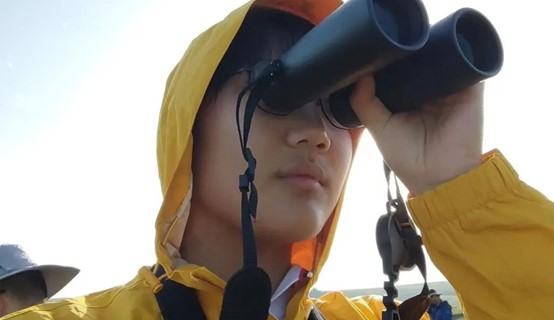
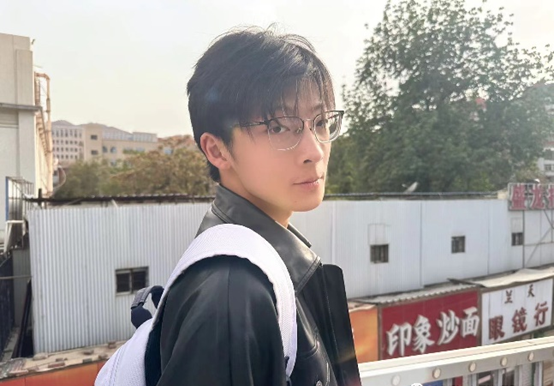

Yibo Yu
Yibo Yu
I have a wide range of interests. I love nature, starry skies, mystery, music, sports and
many other things, but my favorite is 2023 LZU-China, please pay more attention to the
LZU-China iDEC team, and I hope to work with you in the new year to make progress together
and create another brilliant!
 Zhaoyin Su
Zhaoyin Su
Hello, everyone! I come from the hometown of smelly and flavorful snail powder - Liuzhou, Guangxi. I am passionate about exploring this world and
participating in pioneering and innovative research. In terms of honor, I have served as the
head of the national college students' innovation and entrepreneurship project, published
SCI papers as the first author. Swimming in the ocean of science gives me infinite joy. I am
honored to be the captain of Lanzhou University iDEC team this year. Without further ado,
let's create brilliance together this year!
Zhaochen Li
I love philosophy, music and art (working on painting and guitar). I have a wide range of interests, I know a little bit about all kinds of strange things, and I love to play all kinds of games. I am also interested in biomedicine and regenerative medicine. I am very happy and excited to participate in iDEC with all of you, and I hope that we can work together to make an awesome project.
Molan Li
I am a funny girl, I am happy to discover and explore diligently. I am passionate about badminton, volleyball, table tennis, basketball and other sports. I also like music, photography. "Cooperation is like an orchid, raising its fragrance. Pick and admire it, win together in all directions." I am honored to join iDEC, and look forward to our joint efforts to create another success.

Mingyu Wang
I may seem to have an impatient personality, but I am actually calm. I have wider interests and like to try different things. Because I like music and dance, I fell in love with musical theater. I have an excellent ability to accept strange things, and I like to daze and ramble, so don't be surprised if I go crazy one day. I have the patience and confidence to explore the world's infinite possibilities with you all.
Wenyu Zhang
Hello everyone, I am a diligent laboratory worker, good at pipetting gun ignition. I am very happy to join LZU-China as a member of the experimental group. I hope to make progress with you in this iDEC competition and achieve better results!
Zihan Li
Hello, i'm Li Zihan from Suzhou, Jiangsu Province. I'm a member of LZU-CHINA 2023. I like to walk in the sun on a clear afternoon, and I like to walk in the silence of the morning after a rain. I like all kinds of introspection or searching for the essence. I hope I can play my part in the LZU-China team and work together!
Mengwei Xu
I come from Yantai, Shandong Province. My major is visual communication design. I am lively, cheerful, optimistic and motivated. I like drawing and writing to enrich my life. I hope I can play my skills in the team and add luster to LZU-CHINA. New here, please give me your advice.

WeiHan Kang
Literate and martial, Internet surfing master, typing speed 150wpm, can play tennis with a broom handle, good at wearing surgical sterile gloves, once skipped class to see the campus singer competition as a photographer. I hope I can do something fun with you guys.
Xiangyu Wang
Hello everyone, I come from Sanmenxia City, Henan Province, the birthplace of Taoist culture. I like to look at things and the underlying laws of social operation from a philosophical perspective, and I am also keen to explore various mysteries of human diseases. In life, I love badminton, table tennis and other sports, and have a strong interest in ballroom dancing. I am very happy to join iDEC, and I hope I can make a small contribution to it!
Weining Wang
I like photography, I like traveling, I like Tarot, I like to explore all kinds of interesting things in the world. Time is long, but with love, we can go to the sea of stars together. I hope I can contribute my strength in the team and go forward with you hand in hand!
Hui Wei
I am Wei Hui from Guangdong Province. My major is Stomatology and my minor is colorful. I hope that I dare to venture and create, can do nail beauty to be myself, but also can wear surgical gloves to be rigorous doctor; I can bury my head in professional textbooks, and I can also look up and type computer code. With a great team and a determination to win, here we come iDEC!
Yuejuan Luo
Hi, I'm Luo Yuejun, from the First Clinical Medical College, clinical medicine major. I love life and enjoy life. I like to enjoy various styles of music in bed late at night (taytay is my favorite). I am a happy planet native who is keen to explore all the interesting things. I hope to work hard with you and move forward!
Xiaotong Jia
I like painting, I like traveling, I like movies, I like novels. I love everything that lives. I hope I can do my best.
Hehao Ma
Hello, I'm Ma Hehao, and I'm passionate about technology and research.I'm dedicated to
staying current with tech advancements and thrive on challenges. I believe in setting high standards and delivering results.
Outside of work, I enjoy rhythm game and tennis.
Xiangkai Li
Xiangkai Li, Professor. Main research interests: The interaction between the structure and function of contaminated microbial communities and the surrounding environment in Lanzhou section of the Yellow River; Isolation, functional molecular mechanism identification and application prospect of contaminated microorganisms in Lanzhou section of Yellow River; Microbial fuel cell coupled with membrane bioreactor to treat wastewater; Development and utilization of material energy in western China and the Belt and Road region. The main collaborating laboratories are from: University of Oklahoma, University of Calabria, Tsinghua University, Wuhan University, Nanjing Institute of Geography and Limnology, Chinese Academy of Sciences, Gansu Academy of Membrane Science.
Yatao Liu
Yatao Liu, chief physician, Secretary of the second Party General Branch of the First Hospital of Lanzhou University, Director of the Foreign Cooperation and Exchange Office of the First Hospital of Lanzhou University, Deputy director of the Trauma Center of the First Hospital of Lanzhou University, deputy director of the Department of Anesthesia Surgery of the First Hospital of Lanzhou University (presiding over the work), director of the first Department of anesthesia Surgery and secretary of the Party branch of anesthesia Surgery, professional master's degree supervisor.